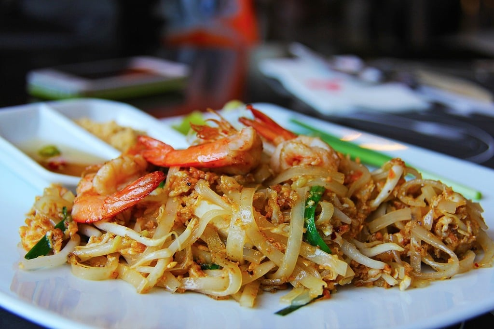

Pad Thai

This is an authentic pad thai recipe with rice noodles, chicken, peanuts, and stir-fried eggs in a traditional tamarind sauce.
Garnish with fresh bean spouts and chives. This recipe was inspired by the pad thai at Thai Tom.
Ingredients
- 12 oc dried rice noodles
- 1 pound chicken breast
- 1/4 cup fish sauce
- 1/2 cup sugar
- 1/2 rice wine vinegar
- 2tb tamarind paste
Steps
- Place rice noodles into a large bowl and cover with several inches of room temperature water; let soak for 30 to 60 minutes. Drain.
- Whisk 1/2 cup sugar, vinegar, fish sauce, and tamarind paste together in a saucepan over medium heat. Bring to a simmer, then remove from the heat.
- Heat 1 tablespoon oil in a skillet over medium-high heat. Add chicken; cook and stir until chicken is no longer pink in the center and the juices run clear, 5 to 7 minutes. Remove from the heat.
- Heat remaining 1 tablespoon oil in a large skillet or wok over medium-high heat. Add garlic and cook until fragrant, about 1 minute. Stir in eggs; scramble until eggs are nearly cooked through, about 2 minutes. Add chicken and rice noodles and stir until well combined.
- Stir in tamarind mixture, 1 1/2 tablespoons sugar, and salt; cook until noodles are tender, 3 to 5 minutes. Stir in peanuts and cook until heated through, 1 to 2 minutes. Garnish with bean sprouts, chives, and paprika; serve with lime wedges.
Home